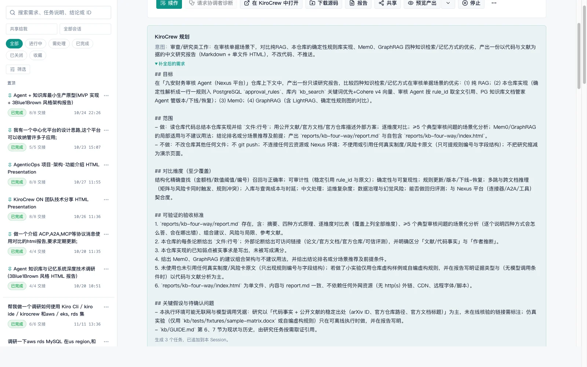
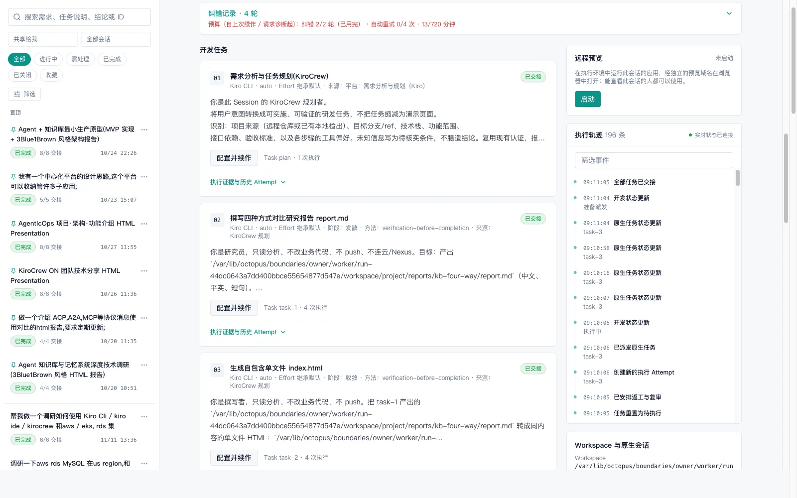
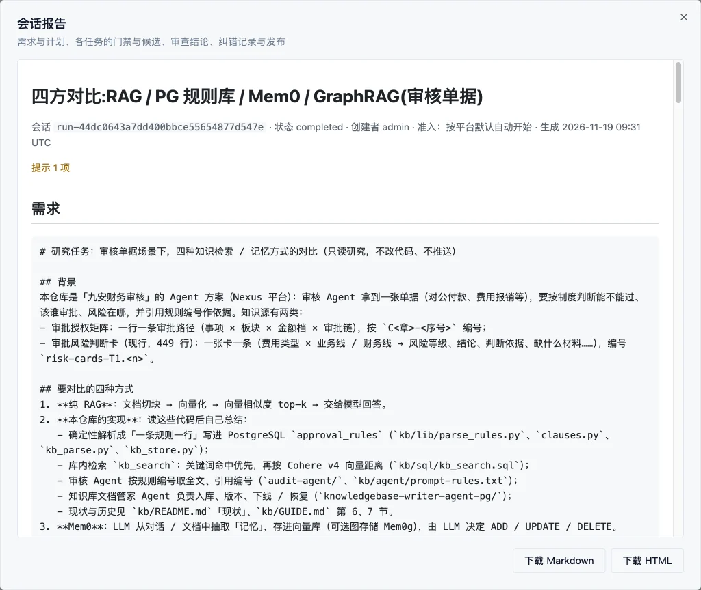

KiroCrew ON
合上电脑，
任务就停了。
它说做完了、测过了，
只是自述，不是证据。
› 实现第 3 个任务
● 正在运行测试…
tests/test_timer.py ....
● 正在运行测试…
tests/test_timer.py ....
- 人得守着
- 自己批改自己
- 失败了要人接
- 成果困在一台电脑上
KiroCrew ON
7×24 在线的多 Agent 研发协作空间
在你习惯的工具里，
说一句话。
Claude Code、Kiro CLI、Kiro IDE、Codex
同一份 Skill 与 MCP 工具
›
● octopus_start
会话 run-7a3f2c 已提交，正在规划
关上终端也没关系，任务在后台继续
分工、互审，每一步都留下交接。
规划
Kiro
补全需求，拆成任务
实现
Claude Code
写代码、跑测试
审查
Codex
换一个工具来审
验收
Evaluator
逐条核对验收项
handoff.md
outcome.json
handoff.md
完成，
由平台判定。
不采信 Agent 的自述：
平台逐项核对，亲自运行验证命令。
审查任务第 1 次执行
- 原生执行✓
- 实际工具与模型✓
- 交接与结论✓
- 安全底线✓
- 验证命令✓
- Evaluator✗ 3 处问题
协调者读证据：退回撰写报告的任务，按出处逐条修正，下游自动重跑。
审查任务第 2 次执行
- 原生执行✓
- 实际工具与模型✓
- 交接与结论✓
- 安全底线✓
- 验证命令✓
- Evaluator✓ 6 项全部通过
通过
一夜之间，5 处错误被逐条打回。
20:55创建会话
20:58规划完成
21:10打回 F1–F3
21:24F2、F3 再次打回
08:57在原会话续作
09:01打回 F5
09:10F4 归因平台
09:11全部通过
F1HTML 里三个术语被 NUL 占位符替换
F2引用行号漂移：写 188–205，实际在 167–178
F3表述过强：「全链路确定性」不成立
F5结论与 kb_search.sql 的限流逻辑不符
F4平台配置混进候选：判为平台的问题，不归责作者
会话 run-44dc，2026-11-03 至 11-04，线上实例的修订记录
回来，
一切都在。
- 规划
- 执行轨迹
- 每次执行的证据
- 预览产出
- 报告
- 在原会话续作






在 Team 里接力，
在你的账号里运行。
会话、工作流和成果可以共享、接手；
每人一个执行边界，凭证各管一段。
你的 AWS 账号
alice 的边界
Worker
KiroCrew Gateway
Kiro · Claude Code · Codex
bob 的边界
Worker
KiroCrew Gateway
Kiro · Claude Code · Codex
Team 专属主机
Worker
KiroCrew Gateway
私网 TLS
会话 run-44dc
共享给 bob，bob 接手续作
上线一个月。
0个会话
0个任务
0已完成
0个会话多 Agent 协作
线上实例 2026-10-11 至 11-11 的全部会话，含平台自身的验收会话
把信任交给平台，
让 Agent 放手去做。
KiroCrew ON7×24 在线的多 Agent 研发协作空间，自托管在你的 AWS 账号